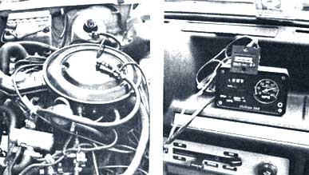

A 20 to 50 percent gas mileage improvement can be yours with ...
During the second World War, fighter pilots could push a button and inject a stream of water into the turbochargers of their monstrous powerplants . . . to get extra thrust on takeoff. Some time later, Chrysler (among other auto manufacturers) installed water injection on a number of its large displacement engines . . . again for a performance increase. Indeed, water injection-used to produce power increases-is nothing new.
But using "Adam's ale" to save gasoline sure is a change of pace! You see, until recently there just hasn't been any way to effectively control the volume and atomization of the tiny amount of fluid needed to adapt H20 injection to a small, economical engine. And typically enough, while big technology has failed to figure out how such regulation could be handled, a small back-lot entrepreneur ( with a wealth of experience and ingenuity, but a paucity of dollars and degrees) has succeeded.
Pat Goodman installed his first water injection system (on a Porsche racing car) in 1964, and the racing organization responded by banning his device . . . it made the vehicle too fast! Undaunted, Pat decided that-even if the racing establishment wasn't interested in "improving the breed", he was.
Today, several near-bankruptcies later, the innovative mechanic owns a vehicle that only the government could argue with: a 1978 Ford Fiesta . . . that gets 50 MPG in normal around-town driving. (This impressive figure has been verified by a MOTHER staffer, who accompanied Goodman on a 48mile jaunt around Winchester, Virginia. During the drive-which Pat accomplished with, if anything, more speed than normal-the small four-cylinder sipped only .95 gallon of unleaded gas.)
Like most good ideas, the Goodman water injection design is an amazingly simple approach to a frighteningly complex problem. In fact, the production system is much less complicated than the prototype model pictured in the accompanying photos. It consists only of an atomization nozzle, plus two one-way valves from squirt guns, some hose (to supply water to the "sprayer" and draw pressure from the emission system), and a one-gallon water tank.
The nozzle is screwed into the top of the air cleaner housing and sprays minute droplets of water into the carburetor throat . . . in response to orders from the engine's stock smog-control devices.
Despite his occasional criticisms of the government's regulatory bureaucracies, Pat is graciously thankful for all the time and money they've spent developing his system's volume-control device: the smog pump. This air injection mechanism carefully monitors engine speed and load . . . and provides the pressure to activate the Goodman unit's water nozzle!
By restricting air pressure from the pump (either with a valve or by crimping the hose) to about 2-1/2 PSI at around 3,000 RPM (measured with a fuel-pressure gauge), the proper ratio of 5% water to 95% gasoline is assured. And at 5%-if the motor burns a gallon of gas every 45 miles, for example-the gallon of water will last about 900 miles.
So-you may be wondering-just how does water improve gasoline mileage? After all, plain old H20 won't burn. However, because water doesn't burn . . . the fluid does (in effect) raise the octane of the fuel!
This higher "flash point" produces three specific benefits ( as well as some offshoots). First, because the water cools the gas-air mixture, there is greater potential for expansion (since pressure is directly proportional to temperature). Second, combustion turns the water droplets to vapor . . . which also helps create a pressure bonus ( much as the same substance drives a steam engine).
Finally-and most significantly-the conversion of water to steam consumes heat (at a rate of about 1,100 calories per gram of the liquid) at a very critical instant. This absorption of heat prevents the temperature of combustion from rushing to a sharp peak (as it does in a standard engine) and then dropping rapidly off. Instead, the car's heat increases more slowly, reaches a lower peak, and descends much more gradually. (In addition, the longer overall combustion duration creates more pressure than does a standard engine's cycle.)
Thus water injection alone can make your engine more efficient (and gas-thrifty), but a good mechanic can easily improve upon such benefits! Goodman, for instance, runs his Fiesta at a 12.7:1 compression ratio. He can do this because the reduced temperature of combustion prevents the normal problems of pre-ignition and nitrous oxide emissions ( which are produced in a high heat environment): In fact, Pat's little Ford recently loped through the EPA's rigorous (and-at $3,000-expensive) nitrous oxide test with only half the maximum legal emissions.
A high compression ratio can have many benefits . . . but for the most part such "pluses" involve increased power. Most folks assume-or have been led to believe-that more power means more gasoline consumption. Not so! A compression-ratio hike does not change either displacement or fuel flow, but only makes better use of the fuel that's available. In the Goodman Fiesta, more power means that less throttle can be used to travel at the same speed. That efficient gasoline use translates to better mileage . . . as well as a boost in performance. (By the way, the pistons Pat used to raise the compression in his little Ford are obtainable from his auto parts store. You'll find the address at the end of this article.)
If you're reluctant to tackle piston replacement, you can still enjoy an approximately 20% MPG improvement by installing a water injection system on your stock engine. Since Pat plans to sell an installation kit-including nozzle, one-way valves, water tank, related hardware, and detailed instruction book-which will be available (by the time you read this) for under $50, a water injection system should pay for itself (at the rate of about a penny per mile) just 5,000 miles down the road.
In addition, the system is so simple to install that it can be ready to run in less than two hours, and the only recommended maintenance is a nozzle-cleaning (with vinegar) every 20,000 miles.
However, the future of the Pat Goodman water injection system is still undecided. Amidst negotiations for distribution with a large New York firm, Pat received word about the possibility of pending EPA action against people who manufacture automobile engine accessories.
While MOTHER can fully understand why devices that make noise, spit out smog, or gulp gasoline should be controlled, allowances must be made for small manufacturers who can genuinely help us all. Today Pat is not allowed to install his nozzles (nor is any professional mechanic, without that $3,000 nitrous oxide test) despite their seeming benefits. Tomorrow he might not be allowed to make them at all.
EDITORS NOTE: You can obtain the nozzles, instruction books, Arias Pistons, and a variety of other import parts from Atlas Import Parts, Inc., Dept. TMEN, 685 North London Street, Winchester, Virginia 22601.
|
 At left is the water injection ""brain""... at right the results. |
|
|